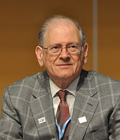

Primeiros computadores:
A 1a geração de computadores (Mark 1 (1944), Colossus (1946) e o Eniac (1946)), que ocorreu entre os anos de 1940 e 1950, foi marcada pelo uso de válvulas eletrônicas para processamento de informações. Esses computadores eram extremamente grandes e pesados, e tinham capacidade limitada de processamento. Mesmo assim, eles foram fundamentais para o desenvolvimento da tecnologia que temos hoje em dia.
A 2a geração de computadores, que ocorreu entre os anos de 1950 e 1960, foi marcada pelo uso de transistores em substituição às válvulas eletrônicas. Esses computadores eram menores, mais rápidos e mais confiáveis do que a geração anterior. Além disso, a linguagem de programação FORTRAN foi desenvolvida nessa época, permitindo uma programação mais eficiente e fácil. Isso tornou os computadores mais acessíveis para empresas e governos, impulsionando o desenvolvimento da computação em larga escala.A 3a geração, que surgiu entre as décadas de 60 e 70, apresentou uma nova revolução tecnológica, com o uso de circuitos integrados em substituição aos transistores. Isso permitiu que os computadores se tornassem ainda menores e mais eficientes, além de terem uma capacidade de processamento muito maior do que as gerações anteriores. Nessa época, também foram criadas linguagens de programação de alto nível, que facilitaram o desenvolvimento de softwares.
A 4a geração, que teve início nos anos 70 e se estendeu até os anos 90, trouxe mais uma evolução significativa para a computação. Com o desenvolvimento dos microprocessadores, os computadores se tornaram ainda menores, mais baratos e mais acessíveis ao público em geral. Além disso, os sistemas operacionais se tornaram mais sofisticados e os computadores passaram a ter recursos gráficos avançados, o que permitiu o surgimento de jogos e programas multimídia. A quarta geração de computadores foi marcada pela popularização dos PCs e pela evolução da internet, que transformou a maneira como as pessoas se comunicam e trabalham.
A 5a geração, que surgiu a partir da década de 80, apresentou uma evolução ainda mais significativa do que as gerações anteriores. O grande destaque dessa época foi o desenvolvimento da inteligência artificial e do processamento paralelo, que permitiu que os computadores fossem capazes de realizar tarefas complexas em tempo real. Além disso, foram criadas novas linguagens de programação, como a linguagem orientada a objetos, que trouxe novas formas de programação. Essa geração de computadores também foi marcada pelo desenvolvimento dos supercomputadores, que possibilitaram grandes avanços em áreas como a meteorologia, a física e a biologia. A quinta geração de computadores teve um grande impacto em diversas áreas, como a medicina, a indústria e a robótica.
Internet
Como surgiu?
A internet teve origem na década de 19601969 como um projeto financiado pelo Departamento de Defesa dos Estados Unidos, conhecido como ARPANET. O objetivo inicial era criar uma rede de computadores que pudesse
resistir a ataques nucleares e garantir a comunicação entre diferentes órgãos militares. Com o passar do tempo, a ARPANET evoluiu e se tornou uma rede de comunicação global, com o surgimento de novas
tecnologias e protocolos, como o TCP/IP, que permitiram a interconexão de diferentes redes e a expansão da internet para outros países e setores.
Nos anos 90, a popularização da internet começou a ocorrer com a disseminação dos computadores pessoais e o desenvolvimento de navegadores web, como o Netscape Navigator e o Internet Explorer.
Com o surgimento da World Wide Web e do comércio eletrônico, a internet se tornou uma ferramenta indispensável para a comunicação, o comércio, a pesquisa e o entretenimento em todo o mundo.
Grandes Nomes
- Grace Murray Hopper
- Joseph Carl Robnett Licklider
- Robert E. Kahn
- Tim Berners-Lee
- Marc Andreessen
- Bill Gates
- Steve Jobs
cientista da computação americana que se destacou por sua contribuição no desenvolvimento da linguagem de programação COBOL e do compilador A-0. Ela também é creditada por popularizar o termo "debugging" para se referir à correção de erros em programas de computador. Hopper serviu na Marinha dos Estados Unidos durante a Segunda Guerra Mundial e foi a primeira mulher a receber um título de doutorado em matemática pela Universidade Yale;

Teorizou sobre uma rede “galáctica” de computadores e plantou a “semente” da comunicação entre dois pontos distintos através do computador;

É um cientista da computação americano, co-inventor do protocolo TCP/IP juntamente com Vint Cerf. Ele é considerado uma das figuras mais importantes no desenvolvimento da Internet. Além disso, Kahn foi um dos fundadores da ICANN, que é responsável pela coordenação global dos sistemas de identificação exclusivos na Internet.

Cientista da computação britânico, conhecido por inventar a World Wide Web em 1989, enquanto trabalhava no CERN. Ele também é fundador da World Wide Web Foundation e promove a abertura e acessibilidade da Web.
Empresário e investidor americano, co-fundador da Netscape Communications Corporation, uma das primeiras empresas a popularizar a navegação na Web. Ele também é co-fundador e sócio geral da empresa de capital de risco Andreessen Horowitz, investindo em empresas como Airbnb, Facebook e Twitter.
Co-fundador da Microsoft Corporation, uma das maiores empresas de software do mundo. Ele é conhecido por ser um dos mais ricos e influentes homens de negócios do mundo, além de ter criado a Fundação Bill e Melinda Gates, dedicada a resolver problemas globais de saúde e educação.
Fundador da Apple Inc., empresa responsável por popularizar o computador pessoal e revolucionar as indústrias de música, telefone e computação móvel. Ele também co-fundou a Pixar Animation Studios e foi um dos mais influentes e inovadores líderes da indústria de tecnologia.